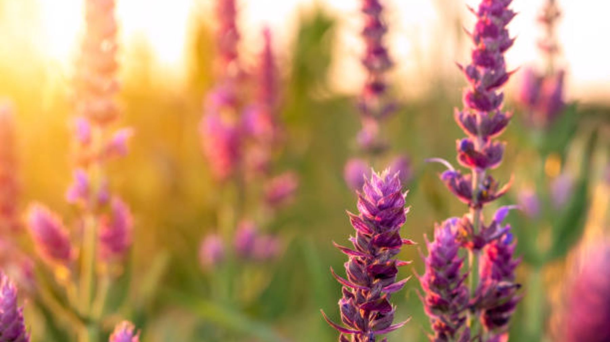

Corrientes aguas puras, cristalinas,
árboles que os estáis mirando en ellas,
verde prado de fresca sombra lleno,
aves que aquí sembráis vuestras querellas,
hiedra que por los árboles caminas,
torciendo el paso por su verde seno:
yo me vi tan ajeno
del grave mal que siento
que de puro contento
con vuestra soledad me recreaba,
donde con dulce sueño reposaba,
o con el pensamiento discurría
por donde no hallaba
sino memorias llenas de alegría.
Toda la creación es del Señor, y somos responsables por la manera en que la usamos. El agua, el aire, la tierra, los minerales, las fuentes de energía, la plantas, la vida animal y el espacio deben apreciarse y conservarse porque son la creación de Dios y no sólo porque son útiles a los seres humanos. Dios nos ha concedido la mayordomía de la creación. Debemos cumplir estos deberes de mayordomía por medio de actos de cuidado y respeto amoroso. Los desarrollos económicos, políticos, sociales y tecnológicos han aumentado el número de los humanos, y han alargado y enriquecido nuestras vidas. No obstante, estos desarrollos han devenido en la defoliación de regiones, la dramática extinción de especies, el masivo sufrimiento humano, la sobrepoblación, y el mal uso y consumo excesivo de recursos naturales no renovables, particularmente por parte de las sociedades industrializadas. Este continuado curso de acción pone en riesgo el legado natural que Dios ha confiado a todas las generaciones. Por tanto, reconozcamos la responsabilidad de la iglesia y sus miembros de dar una gran prioridad a los cambios en los estilos de vida económicos, políticos, sociales, y tecnológicos, para apoyar a un mundo más ecológicamente equitativo y sostenible, que conduzca a una más alta calidad de vida para toda la creación de Dios.
El mundo es principalmente un lugar para dar. Tú aprendes esto dando. Es un lugar para asociarse y reasociarse. Tú aprendes esto asociándote y reasociándote. Has venido desde más allá del mundo portando regalos para el mundo. Esta es sin duda la verdad, pero no caigas en la tentación de pensar que esto indica un papel grandioso para ti. De hecho, tu papel será muy específico, y solo en las más infrecuentes circunstancias atraerá la atención y la aclamación. Debes comprender esto con claridad, porque aquí ves que el mundo es algo muy diferente de lo que habías pensado antes. En vez de ser un lugar ara proclamarte y establecerte a ti mismo, es un lugar para hacer algo entre bastidores, en secreto, sin reconocimiento ni aclamación. Es así como el Conocimiento funciona en el mundo, y es así como aprenderás a trabajar en el mundo a medida que comiences a experimentar un mayor propósito y dirección en la vida.
A menudo se contrapone el término «naturaleza» a otros términos relacionados con la actividad humana, como «sociedad», «cultura» o «intervención humana». Por ejemplo, se considera «entorno natural» a todos aquellos componentes de un determinado paisaje que no han sido alterados sustancialmente por el ser humano o que persisten a pesar de la intervención humana. Este concepto más tradicional de las cosas naturales implica una distinción entre lo natural y lo artificial, entendiendo lo artificial como algo ejecutado por una mente o una conciencia humana. Sin embargo, muchos entornos percibidos como «naturales» en realidad son entornos fuertemente gestionados e intervenidos por la acción humana, por ejemplo, los parques naturales y parques nacionales.
Siempre se puede hallar más información en la red.